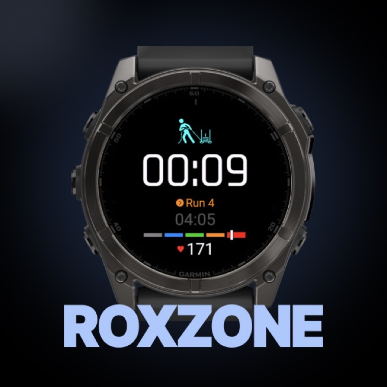
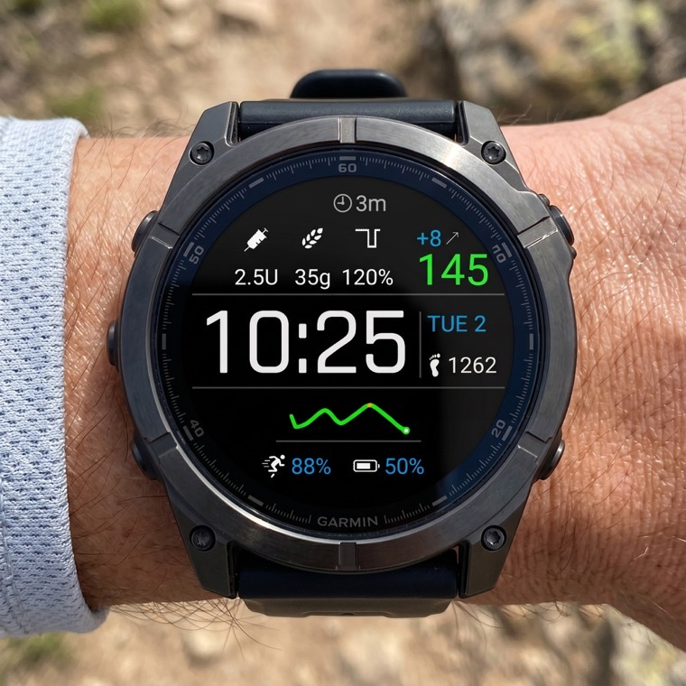
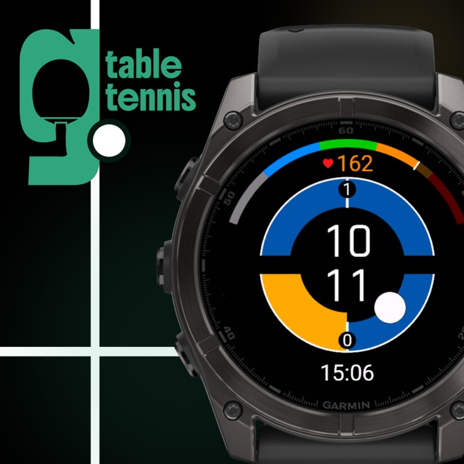

Focused apps for Garmin
Chan Digital
Focused, high-performance software designed to help you get the absolute most out of your wearable.
Products
Maximizing your Device

Watch face
LoopFace
A watch face for xDrip+, AAPS, Spike, and Nightscout users, built around glanceable glucose data.
Get watchface


Device app
Pickleball Go
An app for pickleball players with side-out scoring, the two-server sequence handled for you, serve-side tracking, and activity recording.
Get app
Device app
Badminton Go
An app for badminton players with rally-point scoring, service-court indicators, one-gesture scoring, singles & doubles, and activity recording.
Get app
Device app
Table Tennis Go
An app for table tennis players with games to 11, the serve switching itself every two points, one-gesture scoring, singles & doubles, and activity recording.
Get appAbout Chan Digital
Engineered with Passion. Built out of Necessity.
Chan Digital is an independent studio (more like a team of 1) with a personal mission. As an engineer who is medically dependent on devices, I have a deep appreciation for technology that works reliably when it matters most. That personal connection drives my obsession with wearable tech - and my desire to make it better.
The studio was born out of my own needs. I couldn't find a dedicated app to track my HYROX training on my fantastic Garmin, and was constantly wishing for a simple way to keep score during badminton matches. Excitedly, I built the solutions and am striving to make more, and keep bettering them.
I design for real people in real scenarios, there are no middle managers or slow release cycles:
Direct Access
When you share feedback or request a feature, you talk directly with the engineer building it.
Same-Day Updates
Good ideas shouldn't sit in a backlog. Bug fixes and requested tweaks are frequently pushed live the exact same day.
Relentless Refinement
I use these apps every day while training and playing. If a minor bug exists or a feature feels awkward, it bothers me as much as it bothers you. I'm obsessed with the details and won't settle until it's right.
Contact